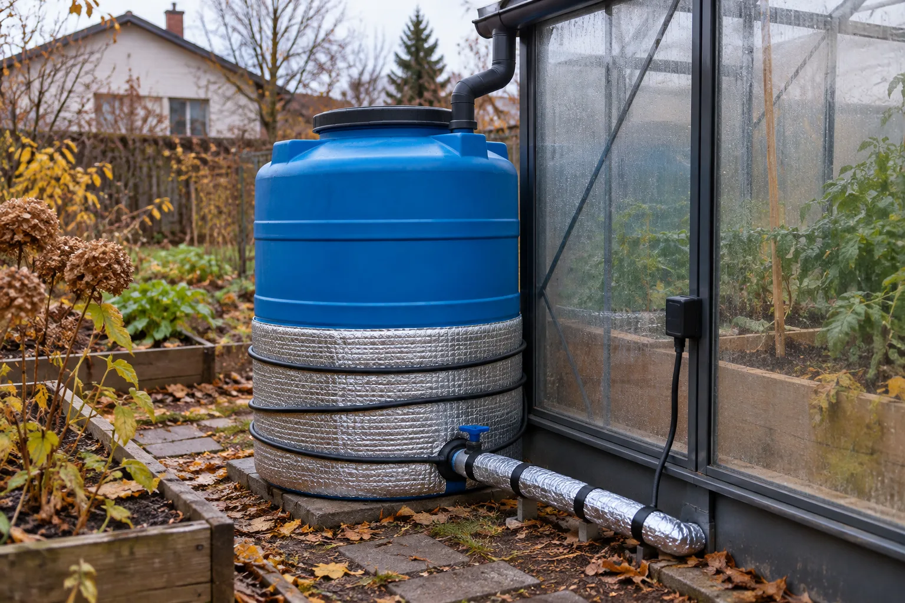
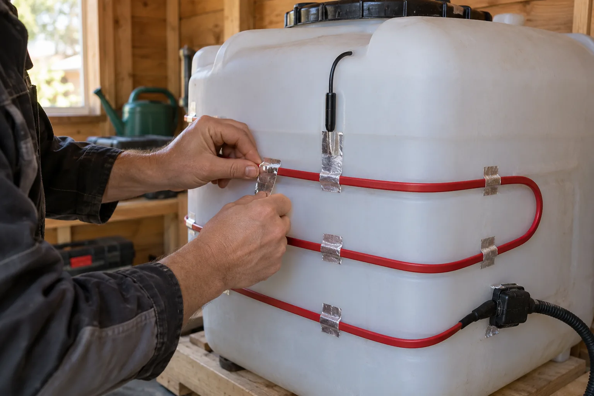

⌂
Частный дом и дача
Накопительные баки и бочки с водой для бытовых нужд в неотапливаемых помещениях и на улице.
КОРДА подберёт греющий кабель, термостат и теплоизоляцию для резервуара, бака или еврокуба. Система поможет защитить жидкость от мороза.

Кабель помогает сохранить воду жидкой, а масла и другие допустимые среды — текучими даже в холодный сезон.

Накопительные баки и бочки с водой для бытовых нужд в неотапливаемых помещениях и на улице.
Баки с техническими жидкостями, которым в холоде нужна стабильная температура.
Баки для поливной воды и хозяйственные резервуары, эксплуатируемые в холодных условиях.
Тепло для приёмных камер, сливов и других уязвимых зон.
Водяные и сливные баки, которые должны оставаться работоспособными на зимней стоянке.
Нужная температура жидкости с учётом объёма, материала стенок и условий на объекте.
Кабель восполняет потери тепла и сохраняет нужную температуру жидкости.
Когда вода не превращается в лёд, стенки и днище бака меньше рискуют треснуть.
Днище, патрубки и краны получают тепло там, где оно особенно нужно.
Термостат с датчиком включает кабель при нужной температуре и отключает его, когда тепло уже есть.
Теплоизоляция удерживает тепло и помогает тратить меньше электричества.
Для пластика и металла подходят разные схемы, кабели и крепёж.
Кабель греет стенки и днище, термостат следит за температурой, а теплоизоляция удерживает тепло.
Проходит по стенкам или днищу бака. При необходимости отдельный контур греет слив и патрубки.
Следят за температурой и включают кабель лишь тогда, когда он нужен.
Алюминиевая лента плотно прижимает кабель к баку, а муфты защищают электрические контакты от влаги.
Утеплитель сохраняет тепло, а кожух защищает кабель и изоляцию от внешних воздействий.
Марку и длину кабеля определяем по теплопотерям конкретного бака.
16 Вт/м при +10 °C. Подходит для небольших баков и бочек с водой, если мощности хватает по нашим вычислениям.
24 Вт/м при +10 °C. Подходит для баков с большими потерями тепла, в том числе еврокубов, если мощности хватит.
Электронный термостат с выносным датчиком ETF-622/633. Следит за температурой бака.
Съёмный термочехол удерживает тепло. Его можно открыть, чтобы добраться до кранов и патрубков.
Соединительная и концевая муфты для совместимых кабелей.
Алюминиевая лента, силовой кабель, герметичные муфты, автомат, УЗО и заземляющий проводник.
У каждого бака свои размеры, теплопотери и нужная температура. Поэтому длину кабеля считаем отдельно.
Уточняем объём, форму, габариты, материал стенок, днище и патрубки.
Смотрим на морозы, ветер, материал утеплителя и его толщину.
Узнаём, какая жидкость в баке, какая температура ей нужна и нужно ли греть её с нуля.
Определяем мощность и длину кабеля, его схему на баке, термостат, УЗО и утеплитель.
Кабель должен плотно прилегать к баку, датчик — точно измерять температуру, а краны — оставаться доступными.

Очистить бак от грязи и ржавчины, убрать острые кромки.
Разложить кабель по схеме без резких изгибов, перехлёстов и сильного натяга.
Прижать кабель к стенкам подходящей лентой и фиксаторами.
Закрепить датчик вдали от самого кабеля, подключить термостат, автомат и УЗО.
Укрыть бак утеплителем, защитить его от влаги и оставить доступ к кранам.
Проверить кабель, изоляцию, муфты, датчик и термостат до первого пуска.
Учитываем размеры бака, температуру жидкости и потери тепла, а не только объём.
Кабель, термостат, датчики, муфты, крепёж и утеплитель подходят друг к другу.
Продумываем, как греть днище, сливы и фланцы, даже если у бака сложная форма.
Да, если кабель и термостат подходят для пластика, а температура не выше той, что допускает производитель бака. Нужен и утеплитель.
Да, он полезен. Кабель сам меняет мощность на разных участках, а термостат следит за температурой всего бака.
Да, если локального тепла хватает. Слив или патрубок можно утеплить и снабдить отдельным кабелем.
Она удерживает тепло в баке. Благодаря ей кабелю нужно меньше энергии.
Это зависит от жидкости и конструкции бака. Для питьевой воды нужны материалы с нужными допусками. Для горючих жидкостей — специальные меры безопасности.
Расскажите о баке: размеры, материал, утеплитель, нужная температура. Если есть фото, приложите его при общении со специалистом.